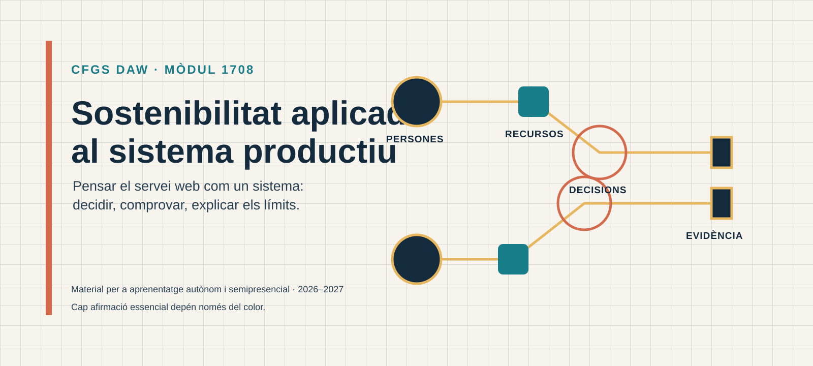

Sostenibilitat aplicada al sistema productiu¶
Materials publicables del mòdul 1708 per a segon de CFGS Desenvolupament d'Aplicacions Web, curs 2026-2027.

Portada de la publicació. Il·lustració original, equip de disseny del projecte, CC0 1.0.
Comença per una unitat. Cada pàgina presenta primer el propòsit, l'itinerari i l'activitat; els detalls curriculars i les referències completes es mantenen disponibles al final en seccions desplegables.
Vista visual de les unitats¶

Comença el teu itinerari¶
- U01 · Sostenibilitat, marcs i criteris ASG · 6 h
- U02 · Reptes ambientals i socials del sector digital · 5 h
- U03 · ODS i exercici professional en DAW · 3 h
- U04 · Economia circular i ecodisseny de servicis web · 6 h
- U05 · Pràctiques sostenibles en el cicle de vida web · 8 h
- U06 · Pla de sostenibilitat d'una empresa web · 6 h
En cada unitat trobaràs primer el propòsit, l'itinerari i el temps orientatiu; després, les idees clau, el cas guiat, l'activitat i l'autoavaluació. Un avís visible indica quan el material d'origen està en esborrany o pendent d'auditoria.
Abans de començar¶
Consulta l'itinerari i la càrrega orientativa per situar les unitats. Les dades de calendari, canal de lliurament, tutories i qualificació continuen subjectes a la informació que determine el centre.
La informació sobre resultats d'aprenentatge, criteris, planificació, estats i traçabilitat està disponible a Informació curricular i traçabilitat.